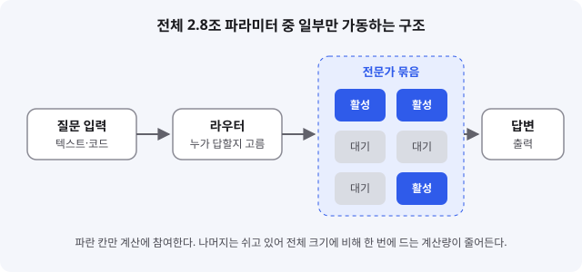
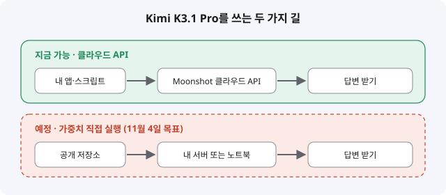

Kimi K3.1 Pro: 2.8조 파라미터 중 일부만 깨우는 오픈 웨이트 모델
- 중국 Moonshot AI가 Kimi K3.1 Pro와 더 빠른 변형 Highspeed를 공개했다. 미국 시간 10월 23일, 한국 시간으로는 10월 24일 새벽이다.
- 전체 2.8조 파라미터 중 한 번에 약 1040억 개만 쓰는 MoE 구조에 100만 토큰 컨텍스트를 붙였고, 가중치는 11월 4일까지 공개한다고 밝혔다.
- 입문 개발자는 지금은 클라우드 API로 먼저 써 보고, 가중치가 풀리면 내 환경에서 돌려 볼지 나중에 판단하면 된다.
중국 AI 기업 Moonshot AI가 10월 23일(미국 기준) 새 플래그십 Kimi K3.1 Pro를 내놓으면서 개발자 커뮤니티가 다시 오픈 모델 이야기로 들썩였다. 이 모델의 특징은 크기가 매우 크지만 답을 만들 때 쓰는 부분은 일부뿐이라는 점, 그리고 100만 토큰이라는 긴 입력을 받는다는 점이다. 아직 가중치가 공개되지 않았기 때문에 지금은 발표와 독립 매체 보도를 중심으로 정리했다.
01한눈에 보기
Kimi K3.1 Pro의 핵심 구조는 MoE(Mixture of Experts, 전문가 혼합)라고 부른다. 큰 종합병원을 떠올리면 쉽다. 병원에 전문의가 수백 명 있어도 환자 한 명을 진료할 때는 관련 과의 의사 몇 명만 진료실에 들어간다. 병원 전체 규모는 크지만, 한 번의 진료에 드는 인력은 적다. Moonshot의 공식 발표와 여러 매체는 Kimi K3.1 Pro가 전체 2.8조 파라미터를 갖고 질문마다 약 1040억 파라미터만 쓴다고 전했다. 파라미터는 모델 안에서 학습으로 조정된 숫자들이고, 많을수록 많은 지식을 담을 수 있지만 그만큼 무겁다.

오픈 웨이트(open-weight): 학습이 끝난 가중치 파일을 누구나 내려받아 쓸 수 있게 공개하는 방식. 소스 코드 전체가 공개되는 오픈소스와는 다르다.
MoE: 여러 전문가 중 필요한 일부만 골라 계산하는 구조. 같은 크기의 밀집 모델보다 한 번 답할 때의 계산량이 적다.
02어떻게 동작하나요
동작은 네 단계로 나눠 보면 이해가 쉽다. 먼저 질문이 들어온다. 다음으로 라우터라는 작은 부품이 질문을 보고 어떤 전문가가 답하기 좋은지 고른다. 그다음 선택된 전문가만 계산에 참여하고, 마지막으로 그 결과를 합쳐 답변을 낸다. 나머지 전문가는 쉬고 있으므로 전체 크기에 비해 실제 계산량은 훨씬 작다. 공식 발표는 이 모델을 코딩, 3D 모델링, 금융 리서치, 도구를 쓰는 장기 작업에 강하다고 소개했다. Moonshot은 이 모델을 멀티모달 모델이라고 소개했다.

03왜 지금 화제인가요
가장 크게 반응을 부른 지점은 두 가지다. 하나는 독립 평가 기관 Artificial Analysis의 지능 지수에서 55점으로 4위에 올랐고, 공개 모델 가운데서는 1위라는 보도다. 다른 하나는 가격이다. 기존 Kimi K3보다 저렴하다는 주장이 나왔다. 다만 가격은 매체마다 숫자가 달라서 이 글에서는 확정된 값으로 적지 않았다. 아래 반응은 개발자 블로그와 매체 보도에서 확인한 내용이다.
04관련 나라·기업
| 구분 | 이름 | 어떤 관련이 있나 |
|---|---|---|
| 나라 | 중국 | 모델을 개발한 Moonshot AI의 본사 국가 |
| 기업 | Moonshot AI | Kimi 시리즈를 만든 개발사. K3.1 Pro를 발표하고 가중치 공개 일정을 밝혔다 |
| 기업 | Anthropic | 비교 기준으로 쓰인 Claude Opus 5.5를 만든 회사 |
| 기업 | OpenAI | 비교 기준으로 쓰인 GPT-6 Astra를 만든 회사 |
05기존 방식과 무엇이 다른가
| 비교 항목 | 일반적인 밀집(dense) 모델 | Kimi K3.1 Pro |
|---|---|---|
| 답변 한 번에 쓰는 파라미터 | 전체를 매번 사용 | 전체 2.8조 중 약 1040억 (보도 기준) |
| 계산량 감각 | 모델이 클수록 무거워짐 | 전체 규모는 크지만 실제 계산은 일부만 |
| 입력 길이 | 모델마다 다름 | 100만 토큰 컨텍스트 |
| 가중치 공개 | 모델마다 다름 | 11월 4일까지 공개 예정이라고 밝힘 |
06직접 해 보기
지금 당장 할 수 있는 일은 공식 안내를 읽고 계정과 요금제를 확인하는 것이다. 아래 단계는 Moonshot 공식 포럼과 Unite.AI가 인용한 Kimi 문서에 나온 내용을 바탕으로 했다. 호출 코드는 공식 문서에서 직접 확인하지 못해 적지 않았다.
1. 공식 공지 확인하기
Moonshot 공식 포럼의 Kimi K3.1 Pro 출시 공지를 열어 모델 소개와 가중치 공개 계획을 읽는다.
2. 모델 이름 확인하기
API에서 쓰는 모델 ID는 kimi-k3.1-pro와 kimi-k3.1-pro-highspeed라고 보도됐다. 실제 ID는 공식 API 문서에서 한 번 더 맞춰 본다.
3. 요금제 조건 보기
보도에 따르면 Pro 모델은 Plus 이상, Highspeed는 Pro 이상 요금제에서 쓸 수 있다. 가격표는 매체마다 달라서 공식 가격 페이지에서 직접 확인한다.
4. 가중치 공개 기다리기
11월 4일 전후로 가중치가 풀리면 공개 저장소에서 파일 크기와 실행 요구 사항을 본 뒤, 내 노트북으로 감당 가능한지 판단한다. 2.8조 파라미터 모델은 일반 노트북에 올리기 어려울 가능성이 크다.
07주의할 점과 한계
- 벤치마크 대부분은 Moonshot이 발표한 수치다. 독립적으로 재현된 결과는 아직 많지 않다.
- 사이버 보안 관련 벤치마크에서는 Claude Opus 5.5와 GPT-6 Astra보다 뒤진다고 보도됐다. Moonshot은 보안 위험 때문에 사이버 관련 학습 데이터를 뺐다고 설명했다.
- 발표 문구는 "3T급"이지만 다른 보도는 총 2.8조 파라미터라고 적었다. 숫자는 공식 자료 기준으로 읽는 것이 안전하다.
- 가격은 매체마다 달라서(한 곳은 달러, 다른 곳은 위안으로 보도) 실제 청구 금액은 반드시 공식 페이지에서 확인해야 한다.
- 가중치 공개는 11월 4일까지라는 목표일 뿐 확정된 날짜가 아니다. 공개 전까지는 자체 실행이 불가능하다.
08정리
Kimi K3.1 Pro가 주는 메시지는 "크다고 매번 전부 계산할 필요는 없다"는 설계 방향이다. MoE 구조는 이미 여러 모델에서 쓰이고 있고, 이 모델은 그 방향을 공개 모델 쪽에서 밀어붙인다는 점에서 의미가 있다. 입문 개발자 입장에서는 모델 이름보다 구조의 원리를 이해해 두면 다음 모델이 나와도 빠르게 따라갈 수 있다.
지금 할 일은 단순하다. 공식 API로 짧은 질문을 던져 보고 응답 속도와 비용을 직접 재 보는 것이다. 벤치마크 점수보다 내 작업에서 얼마나 잘 되는지가 더 중요하다. 가중치가 공개되면 그때 다시 실행 환경과 비용을 따져 보면 된다.
09참고한 글
- 📢 Kimi K3.1 Pro has launched! Start exploring now! Moonshot 공식 포럼 · 2026.10.23
- Introducing Kimi K3.1 Pro (공식 게시글) Kimi 공식 X · 2026.10.23
- Moonshot AI launches new flagship Kimi K3.1 Pro model with 3T parameters SiliconANGLE · 2026.10.23
- Moonshot AI Releases Kimi K3.1 Pro, First Model in New K3.1 Series Unite.AI · 2026.10.23 (페이지 표기 기준)
- Kimi K3.1 Pro: 1M Context, 3T Open Weights [2026] tech-insider · 2026.10.24
- Kimi K3.1 Pro: 3 Trillion Parameters, Open Weights, One-Fifth the Price DEV Community · 2026.10.24